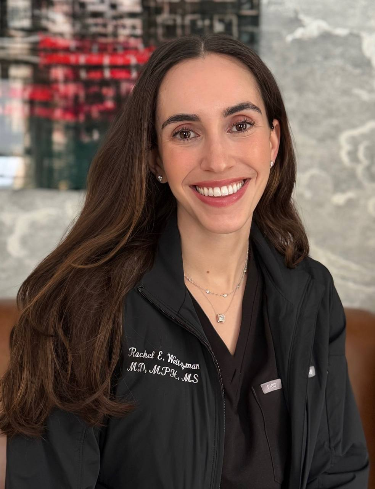
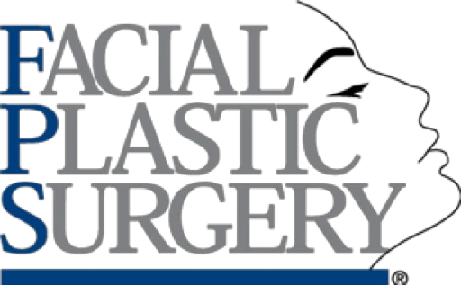
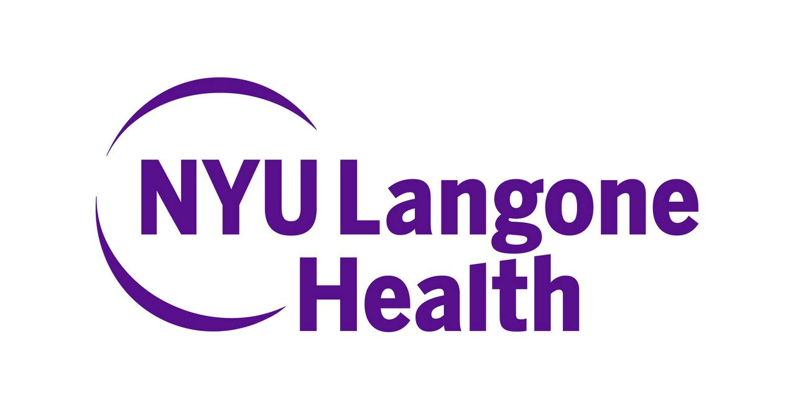
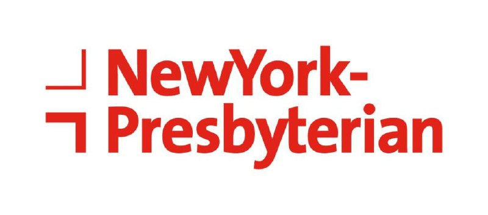
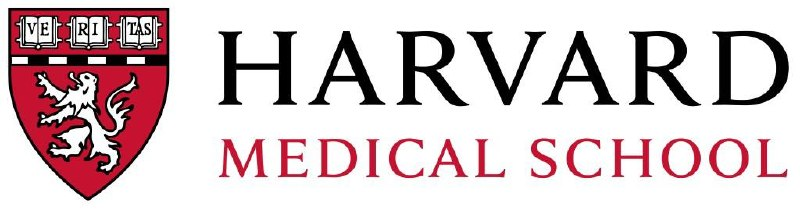
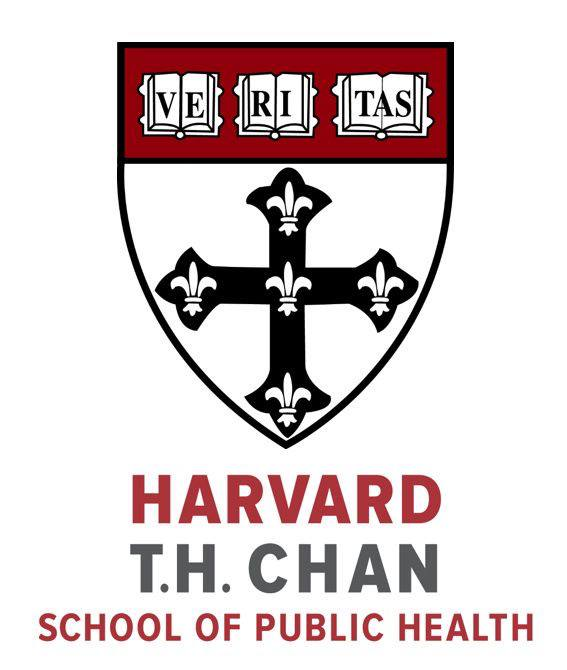

Deep Plane Facelift
Comprehensive facial rejuvenation designed to restore contour while preserving natural expression.
New York City
Rachel Weitzman, MD MPH MS is a facial plastic and reconstructive surgeon in New York City, currently completing advanced fellowship training at NYU with a focus on facial rejuvenation, rhinoplasty, and refined, natural results.

Rachel Weitzman, MD MPH MS
New York City
About
Dr. Weitzman completed residency in Otolaryngology-Head & Neck Surgery at NewYork-Presbyterian / Columbia and Weill Cornell, and is now completing advanced fellowship training in Facial Plastic & Reconstructive Surgery at NYU.
Her work sits at the intersection of academic medicine and aesthetic judgment, with a particular interest in facial rejuvenation, rhinoplasty, eyelid surgery, and nuanced structural balance across the face and neck.
Areas of Focus
Comprehensive facial rejuvenation designed to restore contour while preserving natural expression.
Refinement of the jawline and neck with attention to definition, laxity, and overall harmony.
Elevation of the cheeks and central face to address descent and restore youthful support.
Subtle repositioning of the brow to open the upper face without an overdone look.
Upper and lower eyelid surgery tailored to refresh the eyes while maintaining character.
Functional and aesthetic nasal surgery centered on proportion, breathing, and facial balance.
Thoughtful volume restoration to soften hollowness and support natural rejuvenation.
Selective cheek contouring for patients seeking sharper lower-face definition.
Perioral refinement aimed at better balance, definition, and tooth show.
Structural augmentation to strengthen profile balance and lower-face projection.
Training & Affiliations
Author of 40+ peer-reviewed publications in journals including The Laryngoscope, Plastic and Reconstructive Surgery, and Facial Plastic Surgery & Aesthetic Medicine.




